Next: 4.3.1.2 Time-dependent system and
Up: 4.3.1 Changes of variables
Previous: 4.3.1 Changes of variables
Contents
Index
4.3.1.1 Fixed terminal time
Suppose that the terminal time 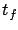
is fixed, so that the terminal time 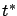
of the optimal trajectory  considered in the proof must equal a given value
considered in the proof must equal a given value 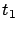
. Temporal control
perturbations are then no longer admissible. Accordingly, the line  formed by the
perturbation directions
formed by the
perturbation directions
 defined
in (4.9) must not be used when generating the terminal cone
defined
in (4.9) must not be used when generating the terminal cone 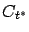
. We now invite the reader to check exactly
where these perturbation directions
were used in
the proof of the maximum principle. As a matter of fact, they were
used in one place only: to show that
 . Thus we
conclude that the Hamiltonian will now be constant but not
necessarily 0 along the optimal trajectory, while all the other
conditions remain unchanged.
. Thus we
conclude that the Hamiltonian will now be constant but not
necessarily 0 along the optimal trajectory, while all the other
conditions remain unchanged.
Let us confirm this fact by reducing the fixed-time problem to a
free-time one via the familiar trick of introducing the extra
state variable
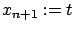
. The system becomes
 |
(4.39) |
If the original target set was
 , then for the
new system we can write the target set as
, then for the
new system we can write the target set as
 , with the terminal time no longer explicitly
constrained. The maximum principle for the Basic Variable-Endpoint
Control Problem can now be applied. The Hamiltonian for the new
problem is
, with the terminal time no longer explicitly
constrained. The maximum principle for the Basic Variable-Endpoint
Control Problem can now be applied. The Hamiltonian for the new
problem is
 ,
where
,
where
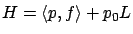
is the Hamiltonian for the original fixed-time
problem. Clearly,
the differential equation for  is the same as before and the
Hamiltonian maximization condition for
is the same as before and the
Hamiltonian maximization condition for
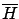
implies the
one for 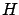
. We know that
 .
Moreover, we have
.
Moreover, we have
 (since
does not depend on
(since
does not depend on  ) hence
) hence 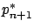
is constant. Thus
 is indeed equal to a constant,
namely,
is indeed equal to a constant,
namely,
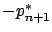
. It is no longer guaranteed to be 0; in fact,
since the final value of 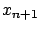
is fixed, the transversality
condition gives us no information about
. This property of the Hamiltonian is also consistent with what we saw in Section 3.4.4.
Next: 4.3.1.2 Time-dependent system and
Up: 4.3.1 Changes of variables
Previous: 4.3.1 Changes of variables
Contents
Index
Daniel
2010-12-20